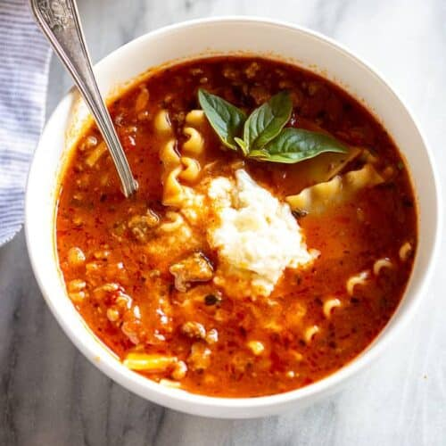

Lasagna Soup

Description
This creamy batch of lasagna soup is perfect for the chilly season. This soup contains a three types of cheese,
spinach,
sausage and I like also like to throw in dice mushrooms.
Ingredients
- 1/2 pound lean ground beef
- 1/2 pound ground italian sausage
- salt
- pepper
- 1 yellow onion
- 1 Tablespoon olive oil
- 3 cloves garlic, minced
- 2 Tablespoons tomato paste
- 24 ounce marinara sauce
- 1/4 teaspoon red pepper flakes (optional)
- 2 Tablespoons parsley, chopped (or 2 tsp dried)
- 1/2 teaspoon dried oregano leaves
- 7 cups low sodium chicken broth (or vegetable broth)
- 9 lasagna noodles, broken into pieces
- 2 cups fresh spinach leaves (optional)
- 10 ounces ricotta cheese (or cottage cheese)
- 1 cup shredded mozzarella cheese
- 1/2 cup freshly grated parmesan cheese
Steps
- In a large pot over medium-high heat, cook ground beef and sausage until browned. Season with salt and pepper
as you cook. Drain grease and remove meat from the pot.
- In a large pot heat olive oil over medium heat. Toss in diced onion and saute for about 5 minutes, stirring occasionally.
Add in minced garlic and cook for another minute or two.
- Stir in tomato paste, marinara sauce, spices and broth. Return meat to pot.
- Bring to boil then add lasagna noodles (broken into 4ths) to pot and reduce heat to medium-low and cook, stirring occasionally,
until noodles are tender. Add spinach, if using.
- In a small bowl, stir together mozzarella, parmesan and ricotta cheese.
- Ladle the hot soup into bowls, and dollop a scoop of the cheese mixture on top. Garnish with fresh basil.